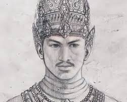
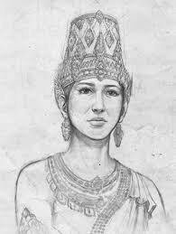

Mahapatih legendaris dengan Sumpah Palapa untuk
menyatukan Nusantara.

Hayam Wuruk
Raja termasyhur Majapahit yang membawa kerajaan ke
puncak keemasan.

Tribhuwana Tunggadewi
Ratu agung yang menjadi ibu dari Hayam Wuruk dan
pelindung Gajah Mada.
ultan Agung (Mataram)
Raja terbesar Kesultanan Mataram yang dikenal
karena keberaniannya
menyerang VOC di Batavia serta jasanya dalam menyebarkan kebudayaan Islam-Jawa.
Ki Hajar Dewantara
Bapak Pendidikan Nasional. Semboyannya, "Ing
Ngarsa Sung Tulada, Ing Madya Mangun Karsa, Tut Wuri Handayani",
menjadi fondasi pendidikan di Indonesia.
Dewi Sartika
Tokoh perintis pendidikan untuk kaum perempuan di
Jawa Barat dengan mendirikan Sekolah Isteri..
Sultan Hasanuddin (Gowa):
Dijuluki "Ayam Jantan dari Timur" karena
keberaniannya melawan monopoli perdagangan Belanda di wilayah Sulawesi.
Pangeran Diponegoro
Pemimpin Perang Jawa (1825-1830) yang sempat
membuat keuangan Belanda bangkrut karena perlawanannya yang sistematis.
Sutan Sjahrir
Perdana Menteri pertama Indonesia yang dikenal
sebagai diplomat tangguh
dalam memperjuangkan kedaulatan Indonesia di mata dunia lewat jalur perundingan.
.jpg)
.jpg)
.jpg)
.jpg)
.jpg)
.jpg)